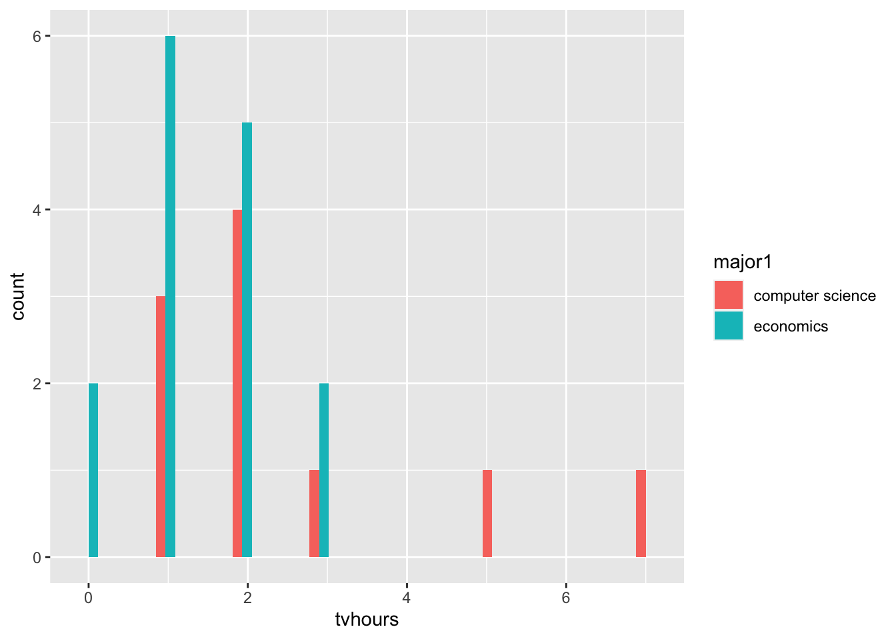
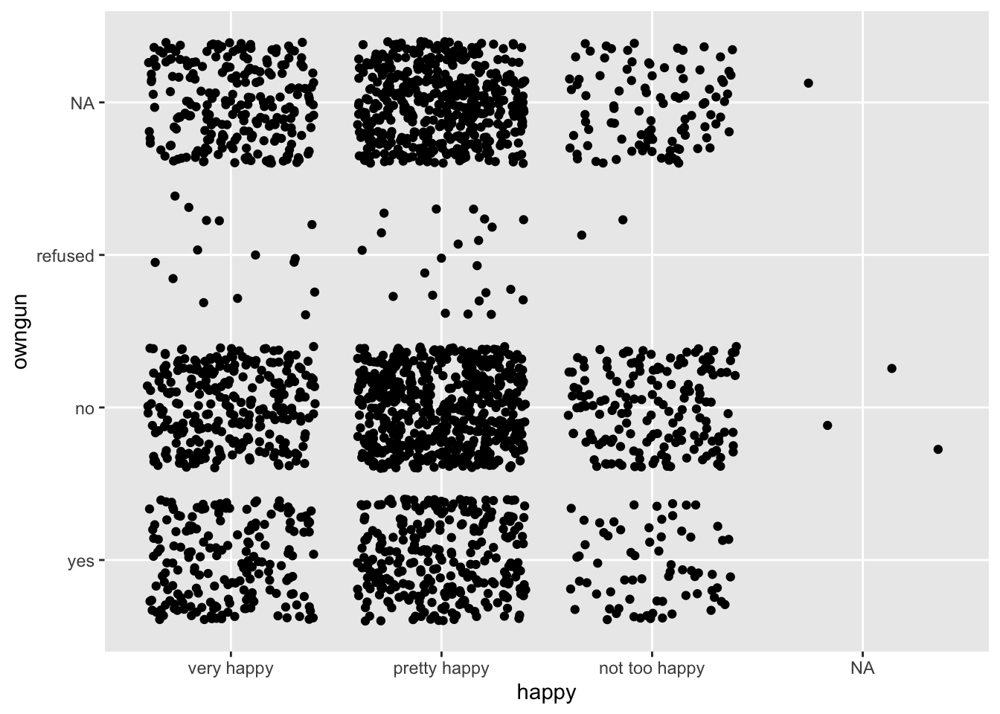

movies <- fosdata::movies7 Comparing Two Groups
7.1 Learning Objectives
This week, we introduce the idea of comparing two groups to evaluate whether the data that we have sampled lead us to believe that the population distribution of the random variables are different. Of course, because we don’t get access to the function that describes the random variable, we can’t actually know if the populations are different. It is for this reason that we call it statistical inference – we are inferring from a sample some belief about the populations.
At the conclusion of this week, students will be able to:
- Recognize the similarities between all frequentist hypothesis tests.
- Evaluate the conditions that surround the data, and choose a test that is best-powered and justifiable.
- Perform and Interpret the results of the most common statistical tests.
7.2 Class Announcements
- Great work completing your final w203 test!
- Unit 7 Homework is Group Homework, due next week.
- The Hypothesis Testing Lab is released today!
- Lab is due at Unit 09 Live Session (two weeks): Apply these fundamentals to analyze 2022 election data and write a single, three-page analysis
7.3 Roadmap
7.3.1 Rearview Mirror
- Statisticians create a population model to represent the world
- A population model has parameters we are interested in
- Ex: A parameter might represent the effect that a vitamin has on test performance
- A null hypothesis is a specific statement about a parameter
- Ex: The vitamin has zero effect on performance
- A hypothesis test is a procedure for rejecting or not rejecting a null, such the probability of a type 1 error is constrained.
7.3.2 Today
- There are often multiple hypothesis tests you can apply to a scenario.
- Our primary concern is choosing a test with assumptions we can defend.
- Secondarily, we want to maximize power.
7.3.3 Looking ahead
- Next week, we start working with models for linear regression
- We will see how hypothesis testing is also used for regression parameters.
7.4 Teamwork Discussion
7.4.1 Working on Data Science Teams
Data science is a beautiful combination of team-work and individual-work. It provides the opportunity to work together on a data pipeline with people from all over the organization, to deal with technical, statistical, and social questions that are always interesting. While we expect that everyone on a team will be a professional, there is so much range within the pursuit of data science that projects are nearly always collaborative exercises.
Together as teams, we
- Define research ambitions and scope
- Imagine/envision the landscape of what is possible
- Support, discuss, review and integrate individual contributions
Together as individuals we conduct the heads-down work that moves question answering forward. This might be reading papers to determine the most appropriate method to bring to bear on the question, or researching the data that is available, or understanding the technical requirements that we have to meet for this answer to be useful to our organization in real time.
What is your instructor uniquely capable of? Let them tell you! But, at the same time, what would they acknowledge that others are better than them?
See, the thing is, because there is so much that has to be done, there literally are very, very few people who are one-stop data science shops. Instead, teams rely on collaboration and joint expertise in order to get good work done.
7.4.2 The Problematic Psychology of Data Science
People talk about the impostor syndrome: a feeling of inadequacy or interloping that is sometimes also associated with a fear of under-performing relative to the expectation of others on the team. These emotions are common through data science, academics, computer science. But, these types of emotions are also commonplace in journalism, film-making, and public speaking.
Has anybody ever had the dream that they’re late to a test? Or, that that they’ve got to give a speech that they’re unprepared for? Does anybody remember playing an instrument as a kid and having to go to recitals? Or, play for a championship on a youth sports team? Or, go into a test two?
What are the feelings associated with those events? What might be generating these feelings?

7.4.3 What Makes an Effective Team?
- This reading on effective teams summarizes academic research to argue:
What really matters to creating an effective tema is less about who is on the team, and more about how the team works together.
In your live session, your section might take 7 minutes to read this brief. If so, please read the following sections:
- The problem statement;
- The proposed solution;
- The framework for team effectiveness, stopping at the section titled “Tool: Help teams determine their own needs.”
“Psychological safety refers to an individual’s perception of the consequences of taking an interpersonal risk. It is a belief that a team is safe for risk taking in the face of being seen as ignorant, incompetent, negative, or disruptive.”
“In a team with high psychological safety, teammates feel safe to take risks around their team members. They feel confident that no one on the team will embarrass or punish anyone else for admitting a mistake, asking a question, or offering a new idea.”
7.4.4 We All Belong
- From your experience, can you give an example of taking a personal risk as part of a team?
- Can you describe your emotions when contemplating this risk?
- If you did take the risk, how did the reactions of your teammates affect you?
- Knowing the circumstances that generate feelings of anxiety – what steps can we take as a section, or a team, to recognize and respond to these circumstances?
How can you add to the psychological safety of your peers in the section and lab teammates?
7.5 Team Kick-Off
Lab 1 Teams
- Here are teams for Lab 1!
Team Kick-Off Conversation
- In a 10 minute breakout with your team, please discuss the following questions:
- How much time will you invest in the lab each week?
- How often will you meet and for how long?
- How will you discuss, review, and integrate individual work into the team deliverable?
- What do you see as the biggest risks when working on a team? How can you contribute to an effective team dynamic?
7.6 A Quick Review
Review of Key Terms
- Define each of the following:
- Population Parameter
- Null Hypothesis
- Test Statistic
- Null Distribution
Comparing Groups Review
Take a moment to recall the tests you learned this week. Here is a quick cheat-sheet to their key assumptions.
| paired/unpaired | parametric | non-parametric |
|---|---|---|
| unpaired | unpaired t-test - metric var - i.i.d. - (not too un-)normal |
Wilcoxon rank-sum ordinal var i.i.d. |
| paired | paired t-test metric var i.i.d. (not too un-)normal |
Wilcoxon signed-rank metric var i.i.d. difference is symmetric sign test ordinal var i.i.d. |
7.7 Rank Based Tests
Darrin Speegle has a nice talk-through, walk through of rank based testing procedures, linked here. We’ll talk through a few examples of this, and then move to estimating against data for the class.
7.7.1 Movie Ratings
Some questions that might be interesting:
- Are action movies rated more highly than comedies?
- Are sequels rated more highly than the first in the series?
7.8 Comparing Groups R Exercise
The General Social Survey (GSS) is one of the longest running and extensive survey projects in the US. The full dataset includes over 1000 variables spanning demographics, attitudes, and behaviors. The file GSS_w203.RData contains a small selection of a variables from the 2018 GSS.
To learn about each variable, you can enter it into the search bar at the GSS data explorer
load('data/GSS_w203.RData')
summary(GSS) rincome happy sexnow
$25000 or more: 851 very happy : 701 women :758
$20000 - 24999: 107 pretty happy :1307 man :640
$10000 - 14999: 94 not too happy: 336 transgender : 2
$15000 - 19999: 61 DK : 0 a gender not listed here: 1
lt $1000 : 33 IAP : 0 Don't know : 0
(Other) : 169 NA : 0 (Other) : 0
NA's :1033 NA's : 4 NA's :947
wwwhr emailhr socrel
Min. : 0.00 Min. : 0.000 sev times a week:382
1st Qu.: 3.00 1st Qu.: 0.000 sev times a mnth:287
Median : 8.00 Median : 2.000 once a month :259
Mean : 13.91 Mean : 7.152 sev times a year:240
3rd Qu.: 20.00 3rd Qu.: 10.000 almost daily :217
Max. :140.00 Max. :100.000 (Other) :171
NA's :986 NA's :929 NA's :792
socommun numpets tvhours
never :510 Min. : 0.000 Min. : 0.000
once a month :243 1st Qu.: 0.000 1st Qu.: 1.000
sev times a week:219 Median : 1.000 Median : 2.000
sev times a year:196 Mean : 1.718 Mean : 2.938
sev times a mnth:174 3rd Qu.: 2.000 3rd Qu.: 4.000
(Other) :215 Max. :20.000 Max. :24.000
NA's :791 NA's :1201 NA's :793
major1 owngun
business administration: 138 yes :537
education : 79 no :993
engineering : 54 refused: 39
nursing : 51 DK : 0
health : 42 IAP : 0
(Other) : 546 NA : 0
NA's :1438 NA's :779 You have a set of questions that you would like to answer with a statistical test. For each question:
- Choose the most appropriate test.
- List and evaluate the assumptions for your test.
- Conduct your test.
- Discuss statistical and practical significance.
7.9 The Questions
7.9.1 Set 1
- Do economics majors watch more or less TV than computer science majors?
GSS |>
select(major1) |>
group_by(major1) |>
tally()# A tibble: 74 × 2
major1 n
<fct> <int>
1 accounting/bookkeeping 29
2 agriculture/horticulture 5
3 anthropolgy 1
4 architecture 3
5 art 10
6 biology 26
7 business administration 138
8 chemistry 4
9 communications/speech 18
10 comm. disorders 2
# ℹ 64 more rowsGSS |>
filter(major1 %in% c('economics', 'computer science')) |>
ggplot() +
aes(x=tvhours, fill = major1) +
geom_histogram(position='dodge')`stat_bin()` using `bins = 30`. Pick better value with `binwidth`.Warning: Removed 11 rows containing non-finite values (`stat_bin()`).
GSS |>
filter(major1 %in% c('economics', 'computer science')) |>
tally() n
1 36It fells like a two sample t-test is the right test for us to conduct.
Who’s watching more TV?
H_{0}: Both Majors watch the same amount of TV. The expected value of number of hours of TV in both majors is the same. I’ll reject the null hypothesis if and only if, the p-value from this test, is smaller than 0.05.
GSS |>
filter(major1 %in% c('economics', 'computer science'))|>
t.test(tvhours ~ major1, data = _)
Welch Two Sample t-test
data: tvhours by major1
t = 1.7123, df = 11.663, p-value = 0.1133
alternative hypothesis: true difference in means between group computer science and group economics is not equal to 0
95 percent confidence interval:
-0.3134265 2.5800931
sample estimates:
mean in group computer science mean in group economics
2.600000 1.466667 # GSS %>%
# filter(major1 %in% c('computer science', 'economics')) %>%
# ggplot() +
# aes(x = tvhours, fill = major1) +
# geom_histogram(bins = 10, position = 'dodge')What kinds of tests could be reasonable to conduct? For what part of the data would we conduct these tests?
## The assumptions about the data drive us to the correct test.
## But, let's ask all the tests that could *possibly* make sense, and see how
## matching or mis-matching assumptions changes what we learn.
## Answers are in the next chunk... but don't jump to them right away. - Do Americans with pets watch more or less TV than Americans without pets?
7.9.2 Set 2
- Do Americans spend more time emailing or using the web?
GSS |>
ggplot() +
geom_histogram(aes(x = wwwhr), fill = 'darkblue', alpha = 0.5) +
geom_histogram(aes(x = emailhr), fill = 'darkred', alpha = 0.5)`stat_bin()` using `bins = 30`. Pick better value with `binwidth`.Warning: Removed 986 rows containing non-finite values (`stat_bin()`).`stat_bin()` using `bins = 30`. Pick better value with `binwidth`.Warning: Removed 929 rows containing non-finite values (`stat_bin()`).
- What are we actually testing at the population level? Is the expected value of hours of web different from the expected value of hours on email?
- What is our null hypothesis? They’re the same!
- What test is most appropriate? This is a tough for us. There is finite hours in the week, but there are some pretty large outliers, so either the t-test, or the the wilcox could be more approrpaite. Let’s conduct both, and see if we learn different things.
- What is our rejection criteria? Let’s say a p-value less than 0.05.
t.test( x = GSS$emailhr, y = GSS$wwwhr)
Welch Two Sample t-test
data: GSS$emailhr and GSS$wwwhr
t = -12.073, df = 2398.5, p-value < 2.2e-16
alternative hypothesis: true difference in means is not equal to 0
95 percent confidence interval:
-7.851614 -5.657397
sample estimates:
mean of x mean of y
7.151515 13.906021 t.test( x = GSS$emailhr, y = GSS$wwwhr, paired = TRUE)
Paired t-test
data: GSS$emailhr and GSS$wwwhr
t = -13.44, df = 1360, p-value < 2.2e-16
alternative hypothesis: true mean difference is not equal to 0
95 percent confidence interval:
-7.420553 -5.530219
sample estimates:
mean difference
-6.475386 wilcox.test(x = GSS$emailhr, y = GSS$wwwhr)
Wilcoxon rank sum test with continuity correction
data: GSS$emailhr and GSS$wwwhr
W = 606652, p-value < 2.2e-16
alternative hypothesis: true location shift is not equal to 0GSS |>
mutate(more_on_email = emailhr > wwwhr) %$%
t.test(more_on_email)
One Sample t-test
data: more_on_email
t = 20.238, df = 1360, p-value < 2.2e-16
alternative hypothesis: true mean is not equal to 0
95 percent confidence interval:
0.2090123 0.2538826
sample estimates:
mean of x
0.2314475 GSS %>%
select(wwwhr, emailhr) %>%
drop_na() %$%
t.test(x = wwwhr, y = emailhr, paired = TRUE)
Paired t-test
data: wwwhr and emailhr
t = 13.44, df = 1360, p-value < 2.2e-16
alternative hypothesis: true mean difference is not equal to 0
95 percent confidence interval:
5.530219 7.420553
sample estimates:
mean difference
6.475386 t.test(
x = GSS$wwwhr,
y = GSS$emailhr,
paired = FALSE
)
Welch Two Sample t-test
data: GSS$wwwhr and GSS$emailhr
t = 12.073, df = 2398.5, p-value < 2.2e-16
alternative hypothesis: true difference in means is not equal to 0
95 percent confidence interval:
5.657397 7.851614
sample estimates:
mean of x mean of y
13.906021 7.151515 - Do Americans spend more evenings with neighbors or with relatives?
wilcox_test_data <- GSS %>%
select(socrel, socommun) %>%
mutate(
family_ordered = factor(
x = socrel,
levels = c('almost daily', 'sev times a week',
'sev times a mnth', 'once a month',
'sev times a year', 'once a year', 'never')),
friends_ordered = factor(
x = socommun,
levels = c('almost daily', 'sev times a week',
'sev times a mnth', 'once a month',
'sev times a year', 'once a year', 'never'))) To begin this investigation, we’ve got to look at the data and see what is in it. If you look below, you’ll note that it sure seems that people are spending more time with their family… erp, actually no. They’re “hanging out” with their friends rather than taking their mother out to dinner.
wilcox_test_data %>%
select(friends_ordered, family_ordered) %>%
rename(
Friends = friends_ordered,
Family = family_ordered
) %>%
drop_na() %>%
pivot_longer(cols = c(Friends, Family)) %>%
ggplot() +
aes(x=value, fill=name) +
geom_histogram(stat='count', position='dodge', alpha=0.7) +
scale_fill_manual(values = c('#003262', '#FDB515')) +
labs(
title = 'Do Americans Spend Times With Friends or Family?',
subtitle = 'A cutting analysis.',
fill = 'Friends or Family',
x = 'Amount of Time Spent') +
scale_x_discrete(guide = guide_axis(n.dodge = 2)) +
theme_minimal()Warning in geom_histogram(stat = "count", position = "dodge", alpha = 0.7):
Ignoring unknown parameters: `binwidth`, `bins`, and `pad`
With this plot created, we can ask if what we observe in the plot is the produce of what could just be sampling error, or if this is something that was unlikely to arise due if the null hypothesis were true. What is the null hypothesis? Well, lets suppose that if we didn’t know anything about the data that we would expect there to be no difference between the amount of time spent with friends or families.
## risky choice -- casting the factor to a numeric without checking what happens.
wilcox_test_data %$%
wilcox.test(
x = as.numeric(family_ordered),
y = as.numeric(friends_ordered),
paired = FALSE
)
Wilcoxon rank sum test with continuity correction
data: as.numeric(family_ordered) and as.numeric(friends_ordered)
W = 716676, p-value < 2.2e-16
alternative hypothesis: true location shift is not equal to 07.9.3 Set 3
- Are Americans that own guns or Americans that don’t own guns more likely to have pets?
- Are Americans with pets happier than Americans without pets?
7.9.4 Apply to a New Type of Data
- Is there a relationship between college major and gun ownership?
table(GSS$owngun, GSS$major1)
accounting/bookkeeping advertising agriculture/horticulture
yes 5 0 2
no 11 0 3
refused 0 0 0
DK 0 0 0
IAP 0 0 0
NA 0 0 0
allied health anthropolgy architecture art biology
yes 0 0 0 1 2
no 0 0 1 7 15
refused 0 0 0 0 0
DK 0 0 0 0 0
IAP 0 0 0 0 0
NA 0 0 0 0 0
business administration chemistry communications/speech
yes 33 0 6
no 52 3 8
refused 1 0 0
DK 0 0 0
IAP 0 0 0
NA 0 0 0
comm. disorders computer science dentistry education economics
yes 2 2 1 25 6
no 0 9 3 32 5
refused 0 0 0 1 1
DK 0 0 0 0 0
IAP 0 0 0 0 0
NA 0 0 0 0 0
engineering english finance foreign language forestry geography
yes 19 3 3 2 0 0
no 22 13 7 2 0 2
refused 2 1 1 0 0 0
DK 0 0 0 0 0 0
IAP 0 0 0 0 0 0
NA 0 0 0 0 0 0
geology history home economics industry & techn journalism law
yes 1 6 0 0 1 4
no 0 7 2 0 0 6
refused 0 0 0 0 0 0
DK 0 0 0 0 0 0
IAP 0 0 0 0 0 0
NA 0 0 0 0 0 0
law enforcement library science marketing mathmatics medicine music
yes 0 1 3 1 4 1
no 1 0 8 3 5 0
refused 0 0 0 1 0 0
DK 0 0 0 0 0 0
IAP 0 0 0 0 0 0
NA 0 0 0 0 0 0
nursing optometry pharmacy philosophy physical education physics
yes 10 0 1 0 1 1
no 18 0 1 1 1 3
refused 3 0 0 0 0 0
DK 0 0 0 0 0 0
IAP 0 0 0 0 0 0
NA 0 0 0 0 0 0
psychology political science/international relations sociology
yes 8 0 1
no 12 10 5
refused 0 0 0
DK 0 0 0
IAP 0 0 0
NA 0 0 0
special education theater arts theology veterinary medicine
yes 0 0 0 1
no 2 1 4 0
refused 0 0 0 0
DK 0 0 0 0
IAP 0 0 0 0
NA 0 0 0 0
liberal arts other general sciences social work general studies
yes 4 5 2 2 1
no 4 11 8 3 4
refused 0 2 0 0 0
DK 0 0 0 0 0
IAP 0 0 0 0 0
NA 0 0 0 0 0
other vocational health industrial relations
yes 1 10 1
no 3 15 0
refused 0 1 0
DK 0 0 0
IAP 0 0 0
NA 0 0 0
child/human/family development food science/nutrition/culinary arts
yes 3 3
no 2 4
refused 0 0
DK 0 0
IAP 0 0
NA 0 0
environmental science/ecology social sciences
yes 4 1
no 3 1
refused 0 0
DK 0 0
IAP 0 0
NA 0 0
human services/human resources
yes 2
no 3
refused 0
DK 0
IAP 0
NA 0
visual arts/graphic design/design and drafting fine arts humanities
yes 3 2 1
no 5 3 0
refused 0 0 0
DK 0 0 0
IAP 0 0 0
NA 0 0 0
ethnic studies educational administration television/film
yes 0 2 0
no 0 3 1
refused 0 0 0
DK 0 0 0
IAP 0 0 0
NA 0 0 0
aviation/aeronatics statistics/biostatistics
yes 2 1
no 0 0
refused 1 0
DK 0 0
IAP 0 0
NA 0 0
criminology/criminal justice
yes 3
no 4
refused 2
DK 0
IAP 0
NA 0
administrative science/public administration electronics
yes 1 3
no 1 3
refused 0 0
DK 0 0
IAP 0 0
NA 0 0
urban and regional planning mechanics/machine trade dance gerontology
yes 0 3 0 0
no 1 0 0 0
refused 0 0 0 0
DK 0 0 0 0
IAP 0 0 0 0
NA 0 0 0 0
public relations textiles/cloth parks and recreation
yes 1 0 0
no 0 0 0
refused 0 0 0
DK 0 0 0
IAP 0 0 0
NA 0 0 0
information technology fashion counseling DK/UNCODED IAP No answer
yes 2 0 2 0 0 0
no 5 0 3 0 0 0
refused 0 0 0 0 0 0
DK 0 0 0 0 0 0
IAP 0 0 0 0 0 0
NA 0 0 0 0 0 0GSS |>
filter(owngun %in% c('yes', 'no'), !is.na(major1)) |>
group_by(owngun, major1) |>
tally()# A tibble: 114 × 3
# Groups: owngun [2]
owngun major1 n
<fct> <fct> <int>
1 yes accounting/bookkeeping 5
2 yes agriculture/horticulture 2
3 yes art 1
4 yes biology 2
5 yes business administration 33
6 yes communications/speech 6
7 yes comm. disorders 2
8 yes computer science 2
9 yes dentistry 1
10 yes education 25
# ℹ 104 more rowsGSS |>
filter(owngun %in% c('yes', 'no'), !is.na(major1)) %$%
chisq.test(x=owngun, y=major1)Warning in chisq.test(x = owngun, y = major1): Chi-squared approximation may be
incorrect
Pearson's Chi-squared test
data: owngun and major1
X-squared = 69.96, df = 68, p-value = 0.4116chisq.test(x=GSS$owngun, y=GSS$socrel)Warning in chisq.test(x = GSS$owngun, y = GSS$socrel): Chi-squared
approximation may be incorrect
Pearson's Chi-squared test
data: GSS$owngun and GSS$socrel
X-squared = 17.861, df = 12, p-value = 0.12chisq.test(x=GSS$owngun, y=GSS$socommun)Warning in chisq.test(x = GSS$owngun, y = GSS$socommun): Chi-squared
approximation may be incorrect
Pearson's Chi-squared test
data: GSS$owngun and GSS$socommun
X-squared = 11.119, df = 12, p-value = 0.5187chisq.test(x=GSS$owngun, y=GSS$happy)
Pearson's Chi-squared test
data: GSS$owngun and GSS$happy
X-squared = 13.812, df = 4, p-value = 0.007921GSS |>
ggplot() +
aes(x=happy, y=owngun) +
geom_jitter()
If there were no relationship between gun ownership and major, then I’d expect that there’s no difference in the joint distribution that isn’t just the product of the two marginal distributions. This is Chi-Squared test location!
?chisq.test7.10 Simulating the Effects of Test Choices
theme_set(theme_minimal())
berkeley_blue <- '#003262'
berkeley_gold <- '#FDB515'
berkeley_sather <- '#B9D3B6'7.10.1 Should we use a t-test or a wilcox sign-rank?
There is some open discussion in the applied statistics literature about whether we should ever be using a t-test. In particular, if the underlying distribution that generates the data is not normal, than the assumptions of a t-test are not, technically satisfied and the test does not produce results that have nominal p-value coverage. This is both technically and theoretically true; and yet, researchers, data scientists, your instructors, and the entire world runs t-tests as “test of first recourse.”
What is the alternative to conducting a t-test as the test of first recourse? It might be the Wilcox test. The Wilcox test makes a weaker assumption – of symmetry around the mean or median – which is weaker than the assumption of normality.
Additional points of argument, which you will investigate in this worksheet:
- If the underlying data is normal, then the Wilcox test is nearly as well powered as the t-test.
- If the underlying data is not normal, then the Wilcox test still maintains nominal p-value coverage, whereas the t-test might lose this guarantee.
7.11
7.11.1 The Poisson Distribution
The poisson distribution has the following PDF:
\[ f_X(x) = \frac{\lambda^n e^{-\lambda}}{n!} \]
The key shape parameter for a poisson function is \(\lambda\); we show three different distributions, setting this shape parameter to be 1, 3, and 30 respectively. Notice that the limits on these plots are not set to be the same; for example, the range in the third plot is considerably larger than the first.
pois_lambda_1 <- rpois(n=1000, lambda=1)
pois_lambda_3 <- rpois(n=1000, lambda=3)
pois_lambda_30 <- rpois(n=1000, lambda=30)
plot_1 <- ggplot() + aes(x=pois_lambda_1) + geom_histogram(bins=6, fill = berkeley_blue)
plot_3 <- ggplot() + aes(x=pois_lambda_3) + geom_histogram(bins=10, fill = berkeley_gold)
plot_30 <- ggplot() + aes(x=pois_lambda_30) + geom_histogram(bins=30, fill = berkeley_sather)
plot_1 / plot_3 / plot_30
What does this changing distribution do to the p-values?
7.11.2 Write a Simulation
pois_sim <- function(num_observations, lambda_one, lambda_two) {
t_test_result <- rep(NA, 10000)
wilcox_result <- rep(NA, 10000)
for(i in 1:10000) {
group_one <- rpois(n=num_observations, lambda=lambda_one)
group_two <- rpois(n=num_observations, lambda=lambda_two)
t_test_result[i] <- t.test(group_one, group_two)$p.value
wilcox_result[i] <- wilcox.test(x=group_one, y=group_two)$p.value
}
df <- data.table(
p_value = c(t_test_result, wilcox_result),
test = rep(c('t_test', 'wilcox_test'), each = 10000)
)
return(df)
}foo <- pois_sim(20, 1, 2.0)foo %>%
ggplot() +
geom_density(aes(x=p_value, color = test)) +
scale_color_manual(values = c(berkeley_blue, berkeley_gold))
And so, the simulation rejects the null at the following rates:
- For the t-test, at a rate of 0.065388
- For the Wilcox test, at a rate of 0.0751916
7.11.3 What if a distribution is much more skewed?
skewed_sim <- function(num_sims=1000, num_observations, alpha_1, beta_1, alpha_2, beta_2) {
t_test_result <- rep(NA, num_sims)
wilcox_result <- rep(NA, num_sims)
for(i in 1:num_sims) {
group_one <- rbeta(n=num_observations, shape1 = alpha_1, shape2 = beta_1)
group_two <- rbeta(n=num_observations, shape1 = alpha_2, shape2 = beta_2)
t_test_result[i] <- t.test(group_one, group_two)$p.value
wilcox_result[i] <- wilcox.test(x=group_one, y=group_two)$p.value
}
dt <- data.table(
p_value = c(t_test_result, wilcox_result),
test = rep(c('t_test', 'wilcox_test'), each = num_sims)
)
return(dt)
}7.11.4 False Rejection Rates
Start with a distribution that has parameters alpha=2, beta=7.
ggplot(data.frame(x=c(0,1)), aes(x)) +
stat_function(fun = dbeta, n=100, args=list(shape1=2, shape2=7))same_dist_small_data <- skewed_sim(
num_observations=10,
alpha_1=2, beta_1=7,
alpha_2=2, beta_2=7
)
same_dist_med_data <- skewed_sim(
num_observations=50,
alpha_1=2, beta_1=7,
alpha_2=2, beta_2=7
)
same_dist_big_data <- skewed_sim( # haha, "big data"
num_observations=100,
alpha_1=2, beta_1=7,
alpha_2=2, beta_2=7
)plot_1 <- same_dist_small_data %>%
ggplot() +
geom_density(aes(x=p_value, color = test), bounds=c(0,1)) +
scale_color_manual(values = c(berkeley_blue, berkeley_gold))
plot_2 <- same_dist_med_data %>%
ggplot() +
geom_density(aes(x=p_value, color = test), bounds=c(0,1)) +
scale_color_manual(values = c(berkeley_blue, berkeley_gold))
plot_3 <- same_dist_big_data %>%
ggplot() +
geom_density(aes(x=p_value, color = test), bounds=c(0,1)) +
scale_color_manual(values = c(berkeley_blue, berkeley_gold))
plot_1 / plot_2 / plot_3- T-tests
- 0.053
- 0.049
- 0.053
- Wilcox Tests
- 0.043
- 0.048
- 0.055
7.11.5 What about Power to Reject
small_diff_small_data <- skewed_sim(
num_observations=10,
alpha_1=2, beta_1=7,
alpha_2=2, beta_2=5
)
small_diff_med_data <- skewed_sim(
num_observations=50,
alpha_1=2, beta_1=7,
alpha_2=2, beta_2=5
)
small_diff_big_data <- skewed_sim( # haha, "big data"
num_observations=100,
alpha_1=2, beta_1=7,
alpha_2=2, beta_2=5
)plot_1 <- small_diff_small_data %>%
ggplot() +
geom_density(aes(x=p_value, color = test), bounds=c(0,1)) +
scale_color_manual(values = c(berkeley_blue, berkeley_gold))
plot_2 <- small_diff_med_data %>%
ggplot() +
geom_density(aes(x=p_value, color = test), bounds=c(0,1)) +
scale_color_manual(values = c(berkeley_blue, berkeley_gold))
plot_3 <- small_diff_big_data %>%
ggplot() +
geom_density(aes(x=p_value, color = test), bounds=c(0,1)) +
scale_color_manual(values = c(berkeley_blue, berkeley_gold))
plot_1 / plot_2 / plot_37.11.6 Paired compared to unpaired tests
paired_sim <- function(num_sims=10000, num_observations, mean_one, mean_two, paired_diff, sd_one, sd_two) {
unpaired_test_unpaired_data <- rep(NA, num_sims)
unpaired_test_paired_data <- rep(NA, num_sims)
paired_test_unpaired_data <- rep(NA, num_sims)
paired_test_paired_data <- rep(NA, num_sims)
for(i in 1:num_sims) {
observation_a1 <- rnorm(n = num_observations, mean = mean_one, sd = sd_one)
## first create unpaired data
observation_b <- rnorm(n = num_observations, mean = mean_two, sd = sd_two)
## then, create paired data
observation_a2 <- observation_a1 + rnorm(n = num_observations, mean = paired_diff, sd=sd_two)
## run tests
unpaired_test_unpaired_data[i] <- t.test(
x = observation_a1,
y = observation_b,
paired = FALSE)$p.value
unpaired_test_paired_data[i] <- t.test(
x = observation_a1,
y = observation_a2,
paired = FALSE)$p.value
paired_test_unpaired_data[i] <- t.test(
x = observation_a1,
y = observation_b,
paired = TRUE)$p.value
paired_test_paired_data[i] <- t.test(
x = observation_a1,
y = observation_a2,
paired = TRUE)$p.value
}
dt <- data.table(
p_value = c(unpaired_test_unpaired_data, unpaired_test_paired_data,
paired_test_unpaired_data, paired_test_paired_data),
test = rep(c('unpaired data, unpaired test', 'paired data, unpaired test',
'unpaired data, paired test', 'paired data, paired test'),
each = num_sims)
)
return(dt)
}bar <- paired_sim(
num_observations = 30,
mean_one = 10,
mean_two = 11,
paired_diff = 1,
sd_one = 4,
sd_two = 5
)paired_data_plot <- bar[grep('unpaired data', test, invert=TRUE)] %>%
ggplot() +
aes(x=p_value, color = test, fill = test) +
geom_density(alpha=0.25) +
labs(title = 'Paired Data')
unpaired_data_plot <- bar[grep('unpaired data', test, invert=FALSE)] %>%
ggplot() +
aes(x=p_value, color = test, fill = test) +
geom_density(alpha=0.25) +
labs(title = 'Unpaired Data')
paired_data_plot / unpaired_data_plot